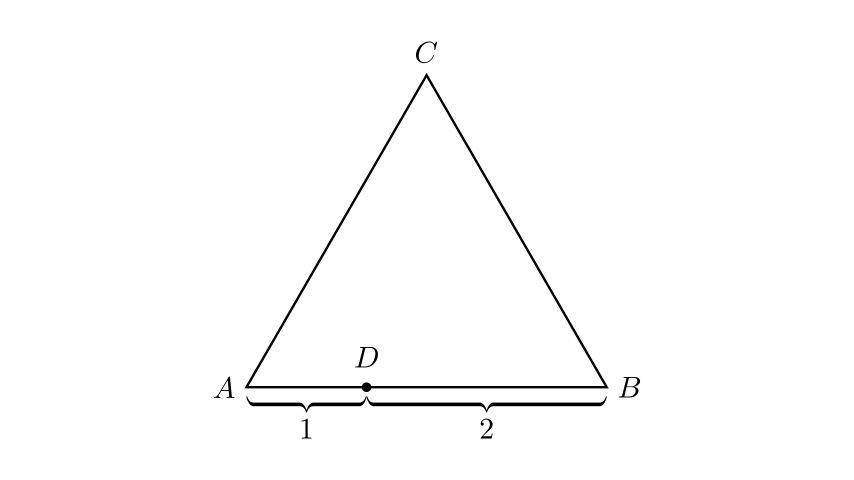
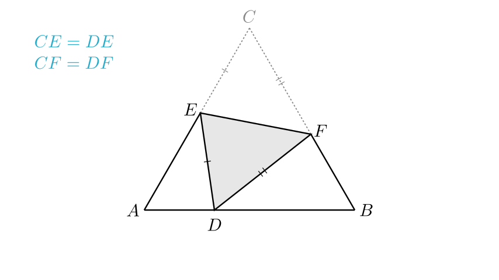
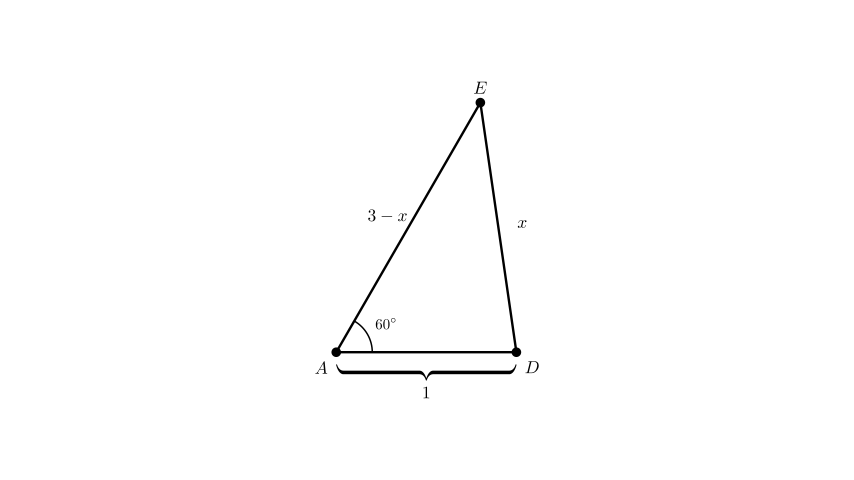
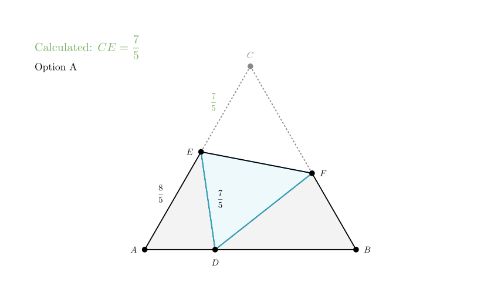

Problem Statement: As shown in the figure, $D$ is a point on side $AB$ of equilateral $\triangle ABC$, such that $AD=1$ and $BD=2$. The triangle $ABC$ is folded such that point $C$ coincides with point $D$. The fold line (crease) is $EF$, where point $E$ is on $AC$ and point $F$ is on $BC$. If $BF=1.25$, what is the length of $CE$?
Options: A. $\frac{7}{5}$ B. $\frac{2}{3}$ C. $\frac{5}{6}$ D. $\frac{1}{2}$
Solution Approach: 1. Determine the side length of the equilateral triangle. 2. Use the properties of folding (reflection) to identify equal segments ($CE = DE$ and $CF = DF$). 3. Define the unknown length $CE$ as a variable $x$. 4. Apply the Law of Cosines in $\triangle ADE$ to solve for $x$.

Step 1: Determine Side Lengths
Since $\triangle ABC$ is an equilateral triangle, all sides are equal in length. From the problem, point $D$ lies on $AB$ with $AD=1$ and $BD=2$.
Therefore, the total side length of the triangle is: $$AB = AD + BD = 1 + 2 = 3$$
So, $AC = BC = AB = 3$.
Step 2: Analyze the Right Side (Segment BC)
We are given that $BF = 1.25$. Since point $F$ is on $BC$, we can find the length of $CF$: $$CF = BC - BF$$ $$CF = 3 - 1.25 = 1.75$$
Step 3: Folding Properties
When the triangle is folded along $EF$ so that $C$ touches $D$: - The segment $CF$ maps to $DF$. Therefore, $DF = CF = 1.75$. - The segment $CE$ maps to $DE$. Therefore, $CE = DE$. - $\angle C$ maps to $\angle EDF$. Since $\angle C = 60^\circ$, then $\angle EDF = 60^\circ$.

Step 4: Set up the equation for CE
Let the length we need to find, $CE$, be $x$. $$CE = x$$
Because of the folding property established in Step 3: $$DE = x$$
Now, look at side $AC$. Point $E$ lies on $AC$. Since the total length $AC = 3$, the remaining segment $AE$ is: $$AE = AC - CE = 3 - x$$
Now we focus on $\triangle ADE$. We have expressions for all three sides and we know angle $A$. - Side $AD = 1$ (given) - Side $AE = 3 - x$ - Side $DE = x$ - $\angle A = 60^\circ$ (property of equilateral triangle)

Step 5: Apply Law of Cosines
In $\triangle ADE$, apply the Law of Cosines: $$DE^2 = AD^2 + AE^2 - 2(AD)(AE)\cos(A)$$
Substitute the known values ($AD=1$, $AE=3-x$, $DE=x$, $\cos(60^\circ) = 0.5$): $$x^2 = 1^2 + (3 - x)^2 - 2(1)(3 - x)(0.5)$$
Simplify the equation: $$x^2 = 1 + (9 - 6x + x^2) - (3 - x)$$
Note that $2 \times 0.5 = 1$, so the last term is just $-(3-x)$, which becomes $-3 + x$.
$$x^2 = 1 + 9 - 6x + x^2 - 3 + x$$
Combine like terms: $$x^2 = x^2 - 5x + 7$$
Subtract $x^2$ from both sides: $$0 = -5x + 7$$
Solve for $x$: $$5x = 7$$ $$x = \frac{7}{5}$$
Conclusion: The length of $CE$ is $\frac{7}{5}$.
This corresponds to Option A.

Final Recap:
Answer: A. $\frac{7}{5}$